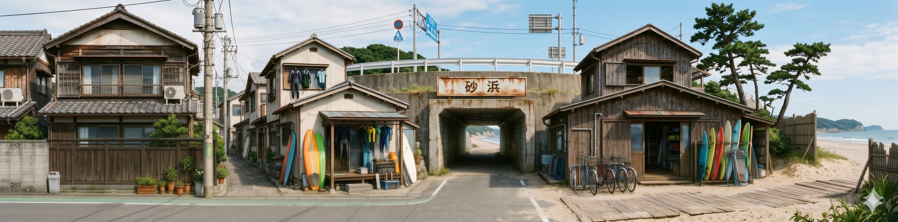
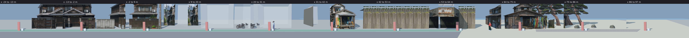
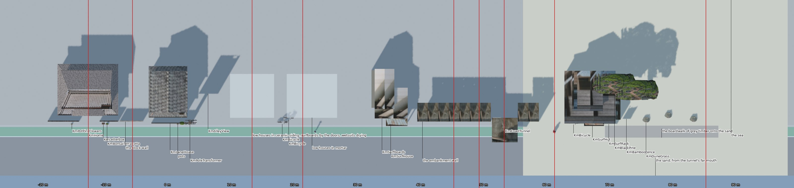

The first leg of route 2, the Shonan Coast: from the kid's home down the neighbours' lane, past the surf shop at the coast road's embankment, through the tunnel under the road, to the boardwalk onto the sand at Yuigahama. It is laid out from your KM2-1 picture, in the order of its five lane pictures, for your approval.
About 98 m from the home's door to the boardwalk. Your picture's fronts are built as KM1-3's shops were: the neighbour's timber house with its fence, the block wall, the surf house, the embankment wall and the surf rental hut. The narrow alley between the houses is a layer 6 m back.
The see-through boxes are what is still to come from the lane pictures: the surfers' houses along the lane (KM2-1b).

Each model at its real size and place, seen through the game camera as the game frames it, the play lane at the front. See-through boxes are what is still to come. The shading is Blender's, not the game's toon look: judge the places, sizes, order and gaps.


| x (m) | What happens |
|---|---|
| -12 | start: out of the home's door (the home stem) |
| -5 | a black-and-white cat stretched out on the block wall (KM-N22): it swipes at a ball kicked high |
| 14 | the surfers' houses: boards by the doors, wetsuits drying (KM2-1b to come) |
| 22 | checkpoint |
| 46 | a Shiba Inu on its patch of the lane before the tunnel (KM-N04, the Dog hazard): it noses a low ball back; chip it over |
| 50 | checkpoint |
| 54 | the tunnel under the coast road: dark inside (DarkZone), 4 m |
| 62 | out onto the sand: sparrows and a wagtail on the boardwalk (KM-N08, N17) |
| 86 | the boardwalk onto the sand: the stop (KM2-2 goes on along the beach) |
| x (m) | Model | Why there |
|---|---|---|
| -14.6 | KmPotPinkFlowers | a pot by its fence |
| -12.0 | KmHome | the kid's home: the level starts at its door (the home stem) |
| -9.6 | KmLetterbox | its letterbox by the gate |
| -9.0 | KmBonsaiTerracotta | a bonsai by its gate |
| -6.1 | KmBlockWall | the concrete block wall, its bin (KM-T22): the cat stretched out on it |
| -4.2 | KmBlockWall | the wall |
| 1.0 | KmLaneHouse | the neighbour's timber house and its board fence (KM-B18) |
| 2.2 | KmPotPinkFlowers | a pot before its fence (the kit's, where the picture has them) |
| 2.9 | KmShrubPlanter | a pot before its fence (the kit's, where the picture has them) |
| 3.5 | KmPotWhiteDaisies | a pot before its fence (the kit's, where the picture has them) |
| 4.0 | KmStoneStandFlowers | a pot before its fence (the kit's, where the picture has them) |
| 4.2 | KmPoleTransformer | the pole at its fence's end |
| 7.0 | KmAlleyView | the narrow alley between the houses (a layer 6 m back) |
| 18.8 | KmBicycle | a bicycle in the rack by a gate (KM-A27: one with a board carrier to come) |
| 19.8 | KmBicycle | another |
| 34.6 | KmSurfboards | the surfboards leaning by its door (KM-A36, a cut-out) |
| 36.0 | KmSurfHouse | the surf shop: its porch, wetsuits and boards (KM-B20) |
| 41.0 | KmEmbankmentWall | the coast road's embankment wall and guard rail (KM-T20) |
| 42.7 | KmEmbankmentWall | the coast road's embankment wall and guard rail (KM-T20) |
| 44.4 | KmEmbankmentWall | the coast road's embankment wall and guard rail (KM-T20) |
| 46.0 | KmEmbankmentWall | the coast road's embankment wall and guard rail (KM-T20) |
| 47.7 | KmEmbankmentWall | the coast road's embankment wall and guard rail (KM-T20) |
| 49.4 | KmEmbankmentWall | the coast road's embankment wall and guard rail (KM-T20) |
| 51.1 | KmEmbankmentWall | the coast road's embankment wall and guard rail (KM-T20) |
| 54.1 | KmCoastTunnel | the tunnel under the coast road (KM-B21): its deck over the lane, the sign, the tiled wall |
| 57.0 | KmEmbankmentWall | the embankment after the tunnel |
| 58.7 | KmEmbankmentWall | the embankment |
| 65.0 | KmBicycle | the hut's bicycles in their rack (the kit's, where the picture has them) |
| 65.8 | KmBicycle | another |
| 66.6 | KmBicycle | another |
| 68.0 | KmSurfHut | the surf rental hut (KM-B22) |
| 70.6 | KmSurfRack | its rack of surfboards and folded chairs (KM-A36, a cut-out) |
| 71.5 | KmBlackPine | a black pine behind the hut |
| 73.4 | KmBambooFence | the bamboo fence by the boardwalk (a cut-out) |
| 75.0 | KmBlackPine | another |
| 76.5 | KmDuneGrass | dune grass (KM-G23) |
| 80.0 | KmDuneGrass | dune grass |
| 84.0 | KmDuneGrass | dune grass |
| 14.0 | (to come) | low houses in ceramic siding, surfboards by the doors, wetsuits drying (KM2-1b) |
| 23.5 | (to come) | low houses in mortar (KM2-1b) |
| 78.0 | (to come) | the sand, from the tunnel's far mouth |
| 79.0 | (to come) | the boardwalk of grey timber onto the sand |
| 90.0 | (to come) | the sea (Enoshima far off) |